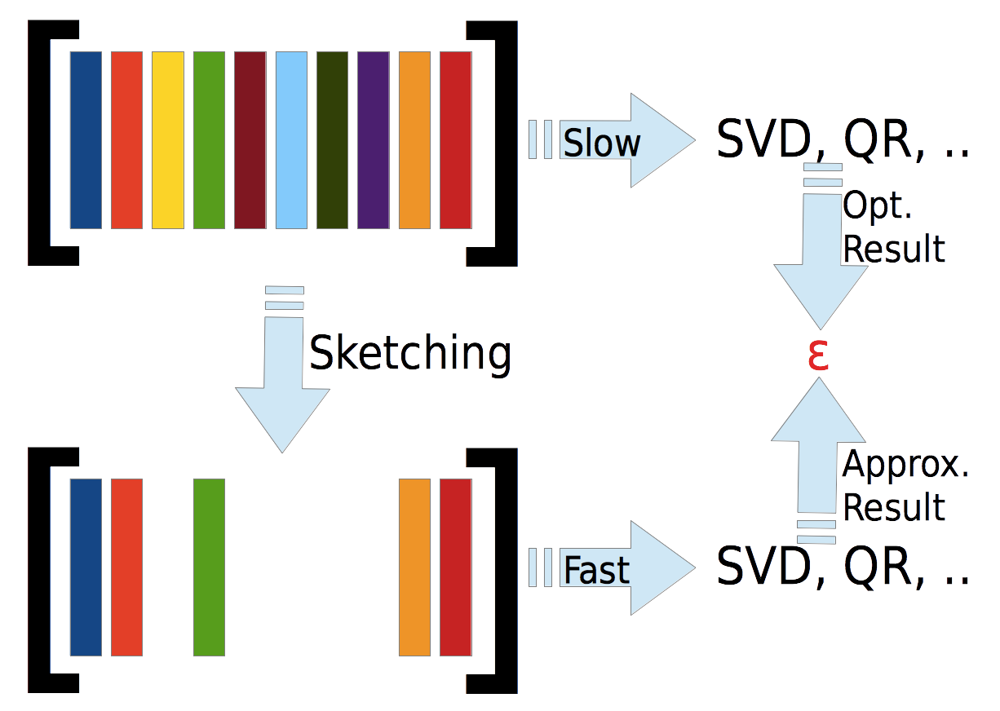

libSkylark
This library for Sketching-based Matrix Computations for Machine Learning, known informally as libSkylark, is suitable for general statistical data analysis and optimization applications.
Many tasks in machine learning and statistics ultimately end up being problems involving matrices: whether you're finding the key players in the bitcoin market, or inferring where tweets came from, or figuring out what's in sewage, you'll want to have a toolkit for least-squares and robust regression, eigenvector analysis, non-negative matrix factorization, and other matrix computations.
Sketching is a way to compress matrices that preserves key matrix properties; it can be used to speed up many matrix computations. Sketching takes a given matrix A and produces a sketch matrix B that has fewer rows and/or columns than A. For a good sketch B, if we solve a problem with input B, the solution will also be pretty good for input A. For some problems, sketches can also be used to get faster ways to find high-precision solutions to the original problem. In other cases, sketches can be used to summarize the data by identifying the most important rows or columns.
A simple example of sketching is just sampling the rows (and/or columns) of the matrix, where each row (and/or column) is equally likely to be sampled. This uniform sampling is quick and easy, but doesn't always yield good sketches; however, there are sophisticated sampling methods that do yield good sketches.
The goal of this project is to build a sketching-based open-source software stack for NLA and its applications, as shown:
| Matrix Completion | Nonlinear RLS, SVM, PCA |
Robust Regression | Other applications |
| Python: Python-based data analytics scripting layer | |||
| PythonBinding: C++ to Python bindings | |||
| NLA:
Numerical Linear Algebra primitives (Least squares regression, low-rank approximation, randomized estimators) |
|||
| Sketch:
Sketching kernels JL, FJL, Gaussian, Sign, Sparse Embedding |
|||
| Third-Party
Libraries: MPI, Elemental, BLAS, CombBLAS, FFTW, Boost |
|||
Please note that the code is in "beta" mode. We are constantly testing and hardening the code, and improving the documentation.
Quick Install Guide
Vagrant and VirtualBox provide an easy way to get started with libSkylark. Follow the steps below to get a libSkylark environment running on a virtual machine. The following assumes Vagrant and VirtualBox are installed.
git clone https://github.com/xdata-skylark/libskylark.git
cd libskylark/vagrant/precise64
vagrant up
vagrant ssh
Note that if you want to test the current development version use the recipe below.
git clone -b development https://github.com/xdata-skylark/libskylark.git
cd libskylark/vagrant/trusty64
vagrant up
vagrant ssh
Building from source
libSkylark is relying on Cmake as a build system. Before you start please make sure to check out the Installing software dependencies for libSkylark section to learn about the required dependencies.
In many situations the default configuration and settings should work out of the box. To that end execute
cd $BUILD_DIR
CC=mpicc CXX=mpicxx cmake $SRC_DIR
make
make install
Note: If you have MPI compilers in your PATH environment variable, Cmake may overwrite the compiler specified in the CXX flag.
In case you have a more specific setup or this does not work on your machine continue reading the installation documentation.